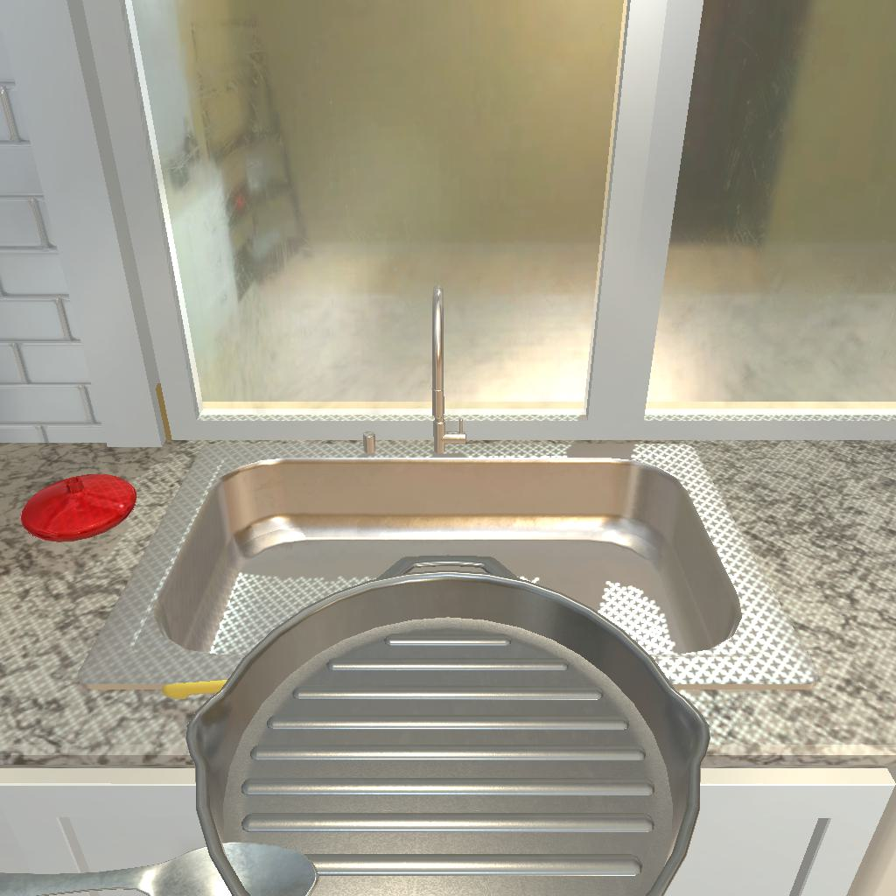
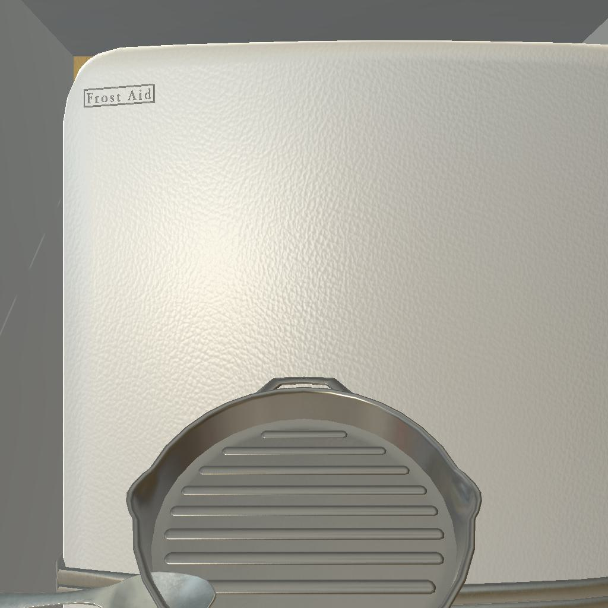

---------------------------------------------------------task: 16---------------------------------------------------------
--------------------------------------------------------------------------------------------------------------------------------------------------------------------
--------------------------------------------------------------------------------------------------------------------------------------------------------------------
Step:--------------------------------------------------------------------------17-------------------------------------------------------------------------------
----------------------------------------
VLM Prompt:
Image1:
Image2:
Image3:
**Instruction**
1. Analyze the provided images to identify all visible household objects and compare the difference between images (e.h. whether the object is opened or not and taken on hand or not), focusing on those relevant to the task description "put a cool pan in sinkbasin."
2. Use the analysis of images and the task hint "The agent must find an object of the desired type, pick it up, go to a fridge, cool the object with the fridge, then find the correct location to place it, and put it down there. The agent does not need to use the fridge button or open the fridge to cool the object, and the agent just needs to do action that is "cool the object with the fridge"." to answer the question: what is the most reasonable action in the choices for the task description "put a cool pan in sinkbasin"?
3. Decide and write the answer using the template: The answer is: (i): , where i is the real number. If there is no desired object in images, search every place based on **Initial Observation** to find the object. And if no one is exactly correct, choose a similar answer.
**Initial Observation**
You are in the middle of a room. Looking quickly around you, you can see cabinet (1-9), countertop (1-3), drawer (1-9), stoveburner (1-4), microwave (1), sink (1), fridge (1), toaster (1), coffeemachine (1), sinkbasin (1), shelf (1-3), garbagecan (1)
**Answer Choices**
(1): go to cabinet 1
(2): go to countertop 1
(3): go to cabinet 2
(4): go to countertop 2
(5): go to drawer 1
(6): go to drawer 2
(7): go to drawer 3
(8): go to drawer 4
(9): go to stoveburner 1
(10): go to drawer 5
(11): go to stoveburner 2
(12): go to stoveburner 3
(13): go to stoveburner 4
(14): go to cabinet 3
(15): go to cabinet 4
(16): go to microwave 1
(17): go to cabinet 5
(18): go to cabinet 6
(19): go to cabinet 7
(20): go to sink 1
(21): go to toaster 1
(22): go to coffeemachine 1
(23): go to cabinet 8
(24): go to drawer 6
(25): go to drawer 7
(26): go to drawer 8
(27): go to sinkbasin 1
(28): go to shelf 1
(29): go to shelf 2
(30): go to countertop 3
(31): go to shelf 3
(32): go to drawer 9
(33): go to cabinet 9
(34): go to garbagecan 1
(35): open fridge 1
(36): close fridge 1
(37): put pan 1 in/on fridge 1
(38): cool pan 1 with fridge 1
(39): examine pan 1
(40): examine fridge 1
**Answer**
Let's think step by step by following the instructions.
----------------------------------------
----------------------------------------
Original Response:
Image Analysis:
- In all three images, we can see a pan that the agent is holding.
- Image1 and Image2 are identical, showing the pan with the sink and a window in the background.
- Image3 shows the pan with a fridge in the background named "Frost Aid."
Task Description Analysis:
- The task is to put a cool pan in the sinkbasin.
- The agent does not need to use a button or open the fridge; it just needs to perform an action to cool the object with the fridge.
Based on the task description and the hint provided, the agent must have already picked up the pan since it is visible in the agent's hand in all images. The next step is to cool the pan with the fridge, which is shown in Image3. After cooling the pan, the agent needs to find the sinkbasin to place the cooled pan in it.
The most reasonable action from the choices provided, considering the task description and the hint, would be to cool the pan with the fridge first and then go to the sinkbasin to complete the task.
The answer is: (38): cool pan 1 with fridge 1
After cooling the pan, the next step would be:
The answer is: (27): go to sinkbasin 1
This completes the task of putting a cool pan in the sinkbasin.
----------------------------------------
----------------------------------------
>>> Refine Original VLM Response and Get Pure Action: cool pan 1 with fridge 1
After cooling the pan, the next step would be:
----------------------------------------
-----------------------------------------------------------------
Running time: 81.66543412208557 seconds
Total Money: 9.732790000000005
-----------------------------------------------------------------
-----------------------------------------------------------------
Text Observation:Nothing happens.
-----------------------------------------------------------------
UNSUCCEED